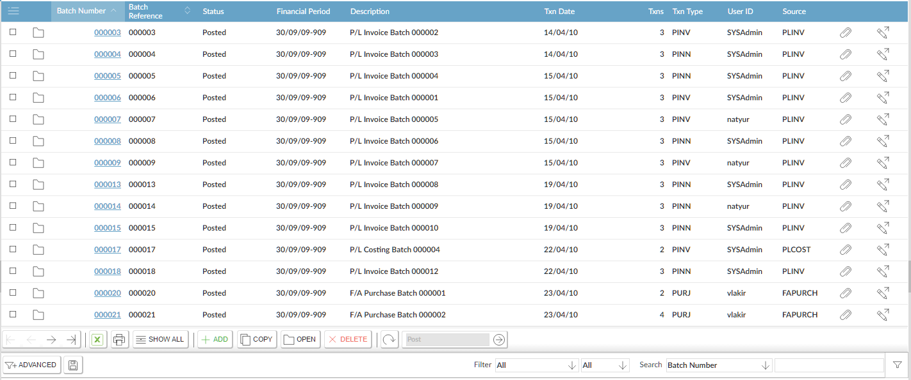
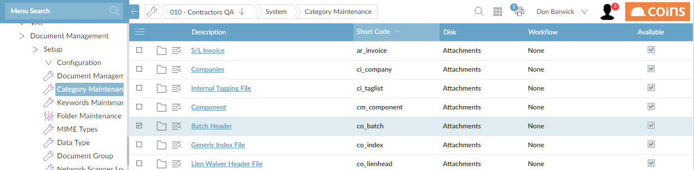
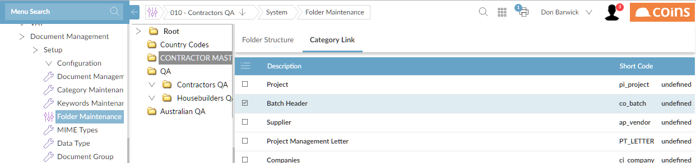

Attaching Batch Posting Reports
Posting reports are reports that can be run either before or after a batch is posted. If they are run before the batch is posted they are known as Listing Reports; if they are run after the batch is posted, they are known as Posting Reports, and show additional information, such as the number of the GL batch actually created.
If the posting report is run for a batch from the past, the settings are taken from the current settings which may be different from when the batch was originally posted. This potentially leads to the situation where the newly-produced posting report is different to the original posting report.
To avoid confusion, a batch posting report is automatically created at the time of posting, and can store the resulting PDF as an attachment to the batch. You can then recover and view the report without having to reproduce the posting report at a later stage.
When you post GL journal batches, either manually or automatically, creates separate posting reports for each batch. For example, if you post a PL Manual Payment batch, creates and posts the and GL Journal batches automatically. As soon as the GL Journal Batch is posted, its posting report is also generated automatically, as are the posting reports of the source batches (that is, PLMAN and CBTR). All these posting reports are attached to the batches automatically.
To view a batch report:
- Go to the relevant batch browse screen.

- Click the
 button in the row of the batch whose report you want to view.
button in the row of the batch whose report you want to view.
You can also go to the batch header of the posted batch and click the
button.
- Click the link for the posting report.

To attach a new posting report:
If you re-run a posting report you can attach it to the batch.
- Go to the posting report function.
- On the Output Options tab, Store Report.
- On the Storing Report Options tab, select the document category (Batch) and input the key fields appropriately:

- Only the selected batch posting report is generated and attached in Document Management . The previous version of batch posting report is not deleted automatically in Document Management.
- Source batch posting reports are not generated automatically in this case. They can be created and attached manually in the appropriate posting report programs.
Setting Up to Attach Posting Reports
- In Keywords Maintenance, add the keywords kco, cbt_type and cob_ref.

- In Category Maintenance, add the category Batch (co_batch).

- Click the link in the Description column, and attach the keywords (Company, Batch Type, Batch Reference) to the Batch category.

- In Folder Maintenance, link the Batch category to the appropriate folder.

- Set the CO/BATCHDM and CO/BATCHDMQ parameters.